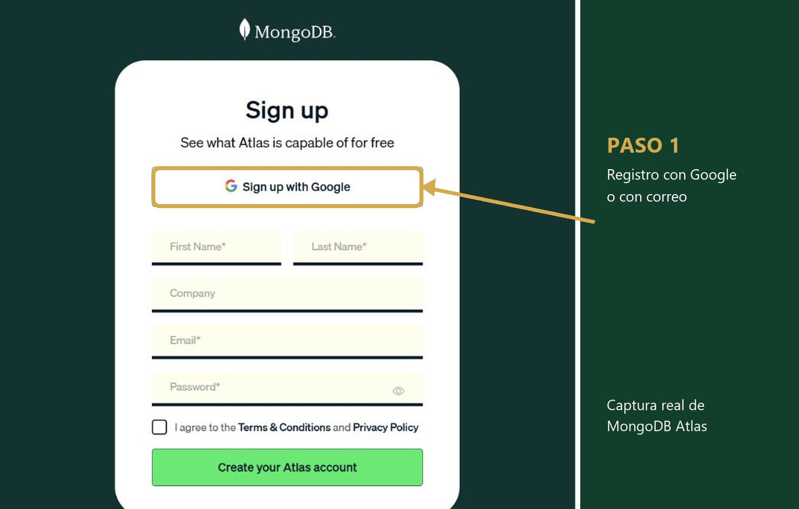
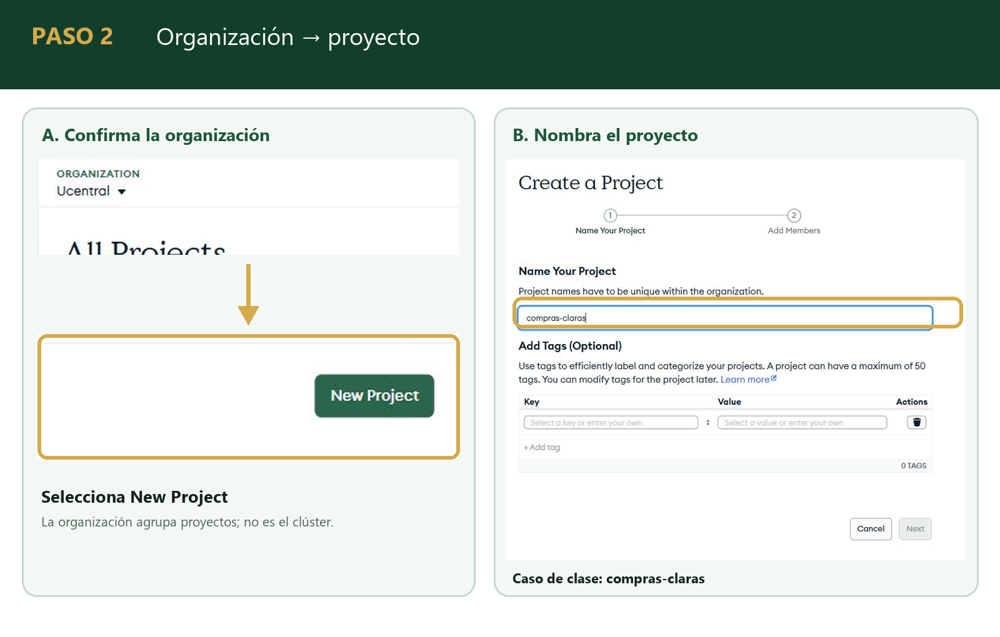
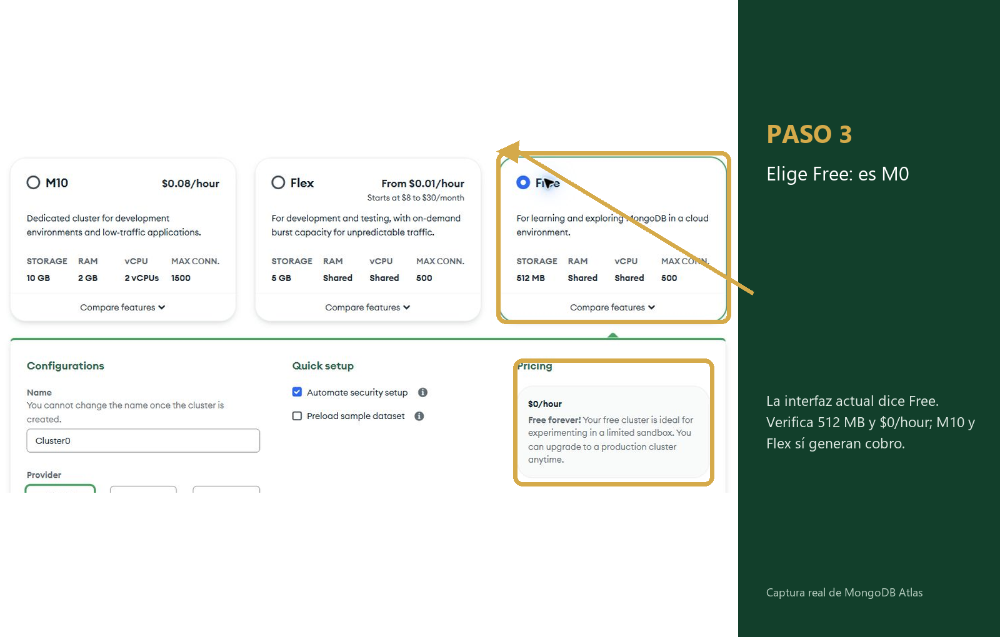
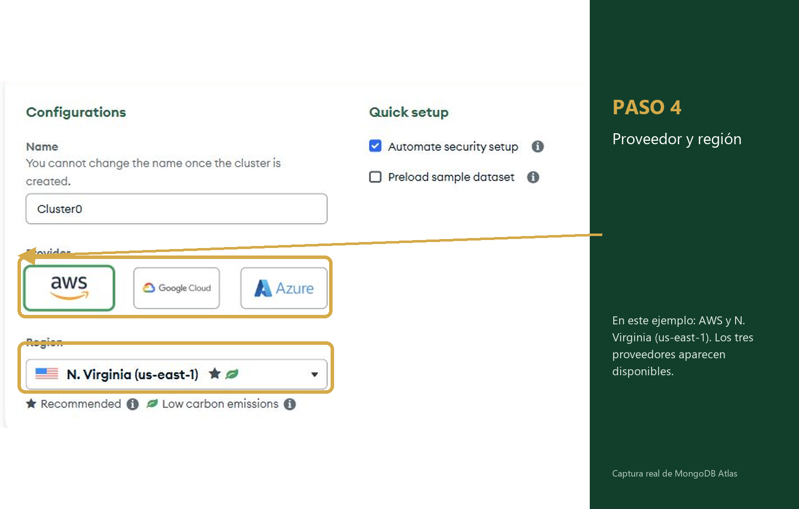
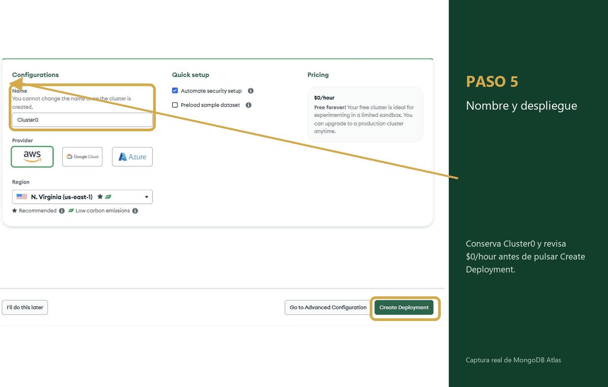
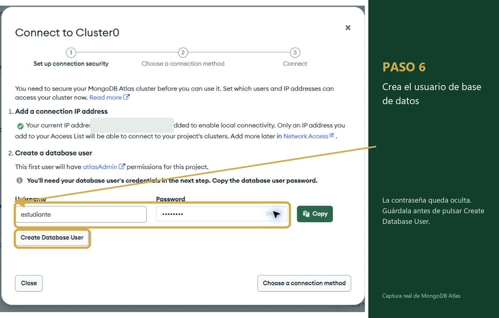
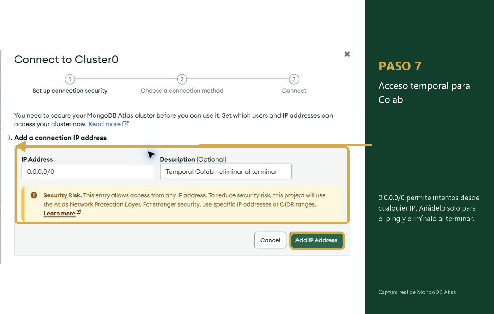
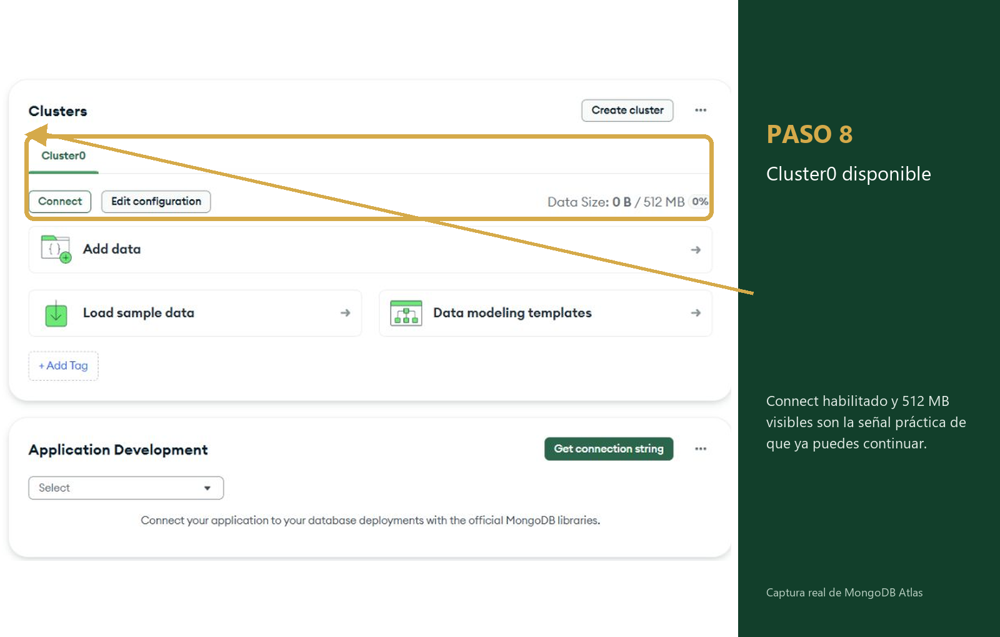
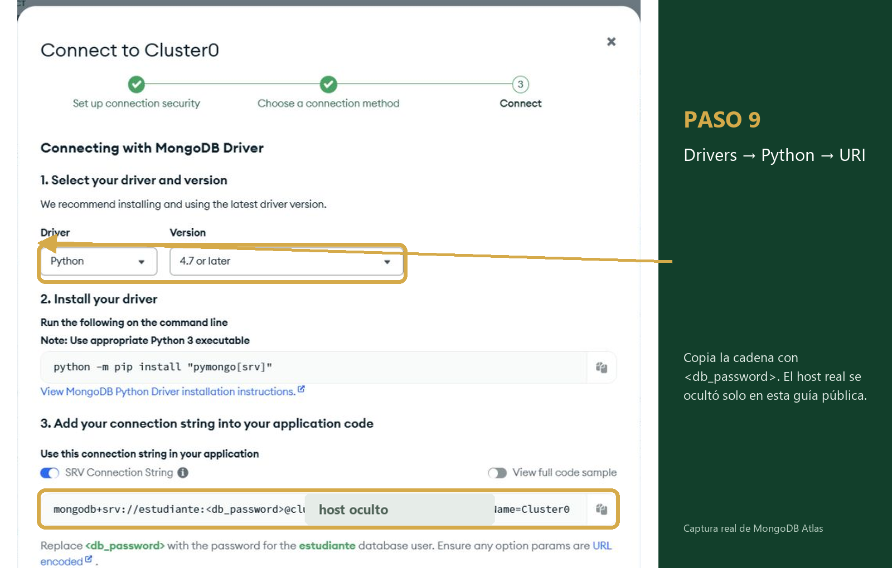

Sesión 4 · MongoDB en la nube
Tu clúster real,
paso a paso
Hasta ahora tuviste un único mongod en tu pestaña de Colab. Esta guía
cumple la promesa que quedó pendiente: montar un clúster administrado, con réplicas de verdad,
gratis y sin tarjeta de crédito.
⏱️ 10 min la primera vez
💳 Sin tarjeta
🗄️ 512 MB gratis para siempre
🔁 3 réplicas reales
i Antes de tocar nada
¿Por qué esto y no lo de la sesión pasada?
En la sesión 3 el motor vivía y moría con tu pestaña. Atlas es lo mismo que ya sabes
usar —find, update_one, aggregate— pero corriendo en un
clúster que no depende de tu computador.
🖥️
Antes: un servidor
Un solo mongod, dentro de tu Colab. Si se cierra la pestaña, desaparece.
☁️
Ahora: un clúster
Tres nodos administrados por MongoDB, coordinados entre ellos. Es lo que se explicó en el bloque 4.
🔑
Tu código casi no cambia
Sigue siendo MongoClient(direccion). Lo único distinto es la dirección.
🎯
Meta de hoy
Terminar con un URI de conexión propio, probado, y tu contraseña guardada.
✓ Antes de empezar
Lo que necesitas a la mano
Son cinco minutos si tienes esto listo antes de abrir el navegador.
1 Un correo al que tengas acceso ahora mismo (sirve el institucional o uno personal).
2 Un gestor de contraseñas. No escribas la clave en el notebook, el repositorio, una captura ni un archivo compartido.
3 Esta pestaña abierta al lado de cloud.mongodb.com.
⚠️
La contraseña que generes en el paso 6 no se vuelve a mostrar. Cópiala en el momento
o tendrás que generar una nueva.
1 Crear la cuenta
Regístrate en Atlas
Sin tarjeta de crédito. El plan gratuito no la pide en ningún paso.
- Entra a
mongodb.com/cloud/atlas/register.
- Regístrate con tu correo o con tu cuenta de Google — con Google es un clic menos.
- Acepta los términos y confirma el correo si te lo pide.
💡 Si usas Google, Atlas te salta directo al
siguiente paso: ni contraseña nueva ni verificación de correo.

🖼️
Captura pendiente
capturas/01-crear-cuenta.png
Pantalla de registro (sign up) de Atlas
2 Organizar
Organización y proyecto
Atlas agrupa todo bajo una Organización, y dentro de ella, Proyectos.
Para esta clase basta el nombre por defecto.
- En el asistente inicial, deja el nombre de Organización que Atlas sugiere (o pon tu nombre).
- Nombra el Proyecto algo reconocible:
compras-claras.
- Pulsa Continuar hasta llegar al panel del proyecto.
💡 Una organización puede tener varios
proyectos. En el semestre vas a crear más de uno — no pasa nada por reutilizar esta organización.

🖼️
Captura pendiente
capturas/02-organizacion-proyecto.png
Asistente de organización y proyecto
3 Desplegar
Crea el despliegue: elige Free (M0)
Pulsa Create y Atlas te ofrece varios tamaños. En la interfaz actual, el nivel M0 aparece como Free.
- Pulsa el botón Create en la vista general del proyecto.
- Selecciona Free: corresponde al clúster M0 gratuito de 512 MB.
- No elijas M10 ni superiores: esas sí cobran por hora.
| Free (M0) | M10 o más |
|---|
| Costo | $0/h; no expira | cobro por hora |
| Almacenamiento | 512 MB | 10 GB o más |
| Para esta clase | Sí, sobra | No hace falta |
💡 Atlas permite un solo clúster Free por
proyecto. Si este proyecto ya tiene uno, crea otro proyecto; no intentes desplegar un segundo
M0 en el mismo.

🖼️
Captura pendiente
capturas/03-boton-create-m0.png
La etiqueta vigente «Free» corresponde al nivel M0
4 Ubicar
Proveedor y región
No cambia nada de lo que vas a aprender. Elige la región más cercana para menos demora.
- Elige cualquier proveedor: AWS, Google Cloud o Azure — los tres tienen M0 gratis.
- Elige la región más cercana a Colombia, por ejemplo una en el este de EE. UU.
- Atlas solo te muestra las regiones que sí ofrecen el plan gratuito.
💡 Si dudas, deja el que Atlas
preselecciona: siempre es una región gratuita válida.

🖼️
Captura pendiente
capturas/04-proveedor-region.png
Proveedor (AWS/GCP/Azure) y región
5 Nombrar
Dale nombre y crea
El nombre no se puede cambiar después del despliegue. Si necesitas corregirlo,
tendrás que eliminar el clúster y recrearlo, o usar otro proyecto.
- En el campo Name, deja el valor por defecto:
Cluster0.
- Usar el nombre por defecto evita confusiones si más adelante copias código de ejemplo.
- Comprueba que el precio siga en $0/hour y pulsa Create Deployment. Se abrirá el asistente de conexión y seguridad.
💡 El nombre solo admite letras, números y
guiones, y máximo 64 caracteres.

🖼️
Captura pendiente
capturas/05-nombre-cluster.png
Campo «Name» y botón «Create Deployment»
6 Autenticar
Crea tu usuario de base de datos
Esto no es tu cuenta de Atlas: es el usuario con el que tu código en Python
va a entrar a la base. Son cosas distintas.
- Escribe un Username, por ejemplo
estudiante.
- Usa tu gestor de contraseñas para generar una clave segura, escríbela en Password y guárdala antes de continuar.
- Pulsa Create Database User.
🔒 Conserva una contraseña segura,
incluso si contiene símbolos. En el paso 10 la codificaremos con
quote_plus() sin mostrarla ni guardarla en la celda.
🧭 En la configuración inicial Atlas puede
asignar al primer usuario el rol amplio atlasAdmin para facilitar la práctica.
Es aceptable únicamente en este entorno de aprendizaje, con datos no sensibles. En un sistema
real se aplica mínimo privilegio; por ejemplo, readWrite solo sobre la base necesaria.

🖼️
Captura pendiente
capturas/06-security-quickstart-usuario.png
Asistente Connect — usuario y contraseña oculta
7 Abrir la puerta
Acceso de red
Por defecto, Atlas no deja entrar a nadie. Hay que decirle explícitamente
desde qué direcciones sí se puede conectar.
- Add Your Current IP Address sirve para tu computador, pero no para Colab: allí la IP puede cambiar.
- Para la prueba en Colab, elige Add a Different IP Address y escribe
0.0.0.0/0.
- Si Atlas ofrece expiración, limita la entrada a siete días como máximo. En el asistente mostrado no apareció esa opción.
- Pulsa Add IP Address y continúa con Choose a connection method.
- Después del ping, elimínala en Security → Database & Network Access → IP Access List.
⚠️0.0.0.0/0 permite intentos de
conexión desde cualquier dirección. La contraseña sigue siendo obligatoria, pero la
exposición aumenta: úsalo solo temporalmente, con datos de práctica, y elimínalo después
del ping si no configuraste expiración.
🩺Si te saltaste este paso, así se ve
el síntoma: la conexión funciona perfecto desde tu computador y falla desde Colab con
ServerSelectionTimeoutError — no con un error de usuario o contraseña. Ese error
específico significa «la red te bloqueó antes de revisar quién eres»: vuelve aquí y agrega
0.0.0.0/0.

🖼️
Captura pendiente
capturas/07-acceso-red.png
Asistente Connect — acceso temporal para probar Colab
8 Esperar
El clúster se está desplegando
Entre unos segundos y tres minutos. Vale la pena verlo una vez: son máquinas de
verdad encendiéndose.
- En Project Overview aparecerá la tarjeta de
Cluster0 mientras termina el despliegue.
- Cuando Atlas indique que está disponible y habilite Connect, ya está listo.
- No necesitas recargar la página: el estado se actualiza solo.
💡 Atlas administra la infraestructura por ti.
Esta pantalla no describe su topología interna: solo confirma que el servicio está disponible
y que el botón Connect ya puede usarse.

🖼️
Captura pendiente
capturas/08-cluster-listo.png
Cluster0 activo, listo para conectar
9 Conectar
Connect → Drivers → Python
Atlas te arma la cadena de conexión: no hay que escribirla de memoria.
- Sobre
Cluster0, pulsa el botón Connect.
- Elige Drivers (dice «Connect to your application»).
- En Driver selecciona Python, y en Version la más reciente.
- Copia la cadena que empieza por
mongodb+srv://.

🖼️
Captura pendiente
capturas/09-connect-drivers-python.png
Connect → Drivers → Python
10 Comprobar
Pruébalo en tu Colab
Pega la URI copiada desde Drivers sin reemplazar
<db_password>. Colab pedirá la contraseña sin mostrarla; el código la codifica en memoria.
# en una celda nueva de tu Colab de sesion 4
!pip -q install pymongo
from getpass import getpass
from urllib.parse import quote_plus
from pymongo import MongoClient
uri_atlas = input("Pega la URI de Atlas conservando <db_password>: ").strip()
if "<db_password>" not in uri_atlas:
raise ValueError("La URI debe conservar el marcador <db_password>.")
contrasena = quote_plus(getpass("Contraseña del usuario de base de datos: "))
uri = uri_atlas.replace("<db_password>", contrasena)
client = MongoClient(uri, serverSelectionTimeoutMS=10000)
# ping es la forma de decir "¿me escuchas?" sin tocar ningun dato
client.admin.command("ping")
print("Conectado a Atlas")
🔐
No imprimas uri ni compartas la salida de la celda.
getpass() oculta la escritura y quote_plus() permite usar la contraseña
segura generada por Atlas.
! Si algo falla
Tres errores frecuentes
Ningún error de esta lista significa que rompiste algo. Lee primero el mensaje:
cada caso se corrige de una forma distinta.
| Lo que ves | Qué pasó | Cómo se arregla |
|---|
| bad auth : Authentication failed |
La contraseña no coincide, o tiene un símbolo sin codificar. |
Vuelve a ejecutar la celda e introduce la contraseña con getpass(); no la pegues en el código. |
| ServerSelectionTimeoutError |
Atlas no respondió dentro del tiempo esperado. Puede deberse a la lista de IP, al estado del clúster,
a DNS o a restricciones de la red. |
Comprueba que el clúster esté disponible y que la entrada temporal no haya expirado. Si debes
recrearla, elimínala al terminar; si persiste, prueba otra red o revisa la resolución DNS. |
| could not resolve host |
La URI está incompleta o el entorno no resolvió el nombre del clúster. |
Vuelve a copiarla desde Drivers, confirma que el clúster está disponible y prueba de nuevo. |
✓ Listo
Ya tienes tu clúster
De aquí seguimos con las mismas órdenes de la sesión 3 — find,
update_one, aggregate — pero contra tu propio clúster en la nube.
✓ Cuenta creada y proyecto con nombre reconocible.
✓ Cluster0 en Free (M0), disponible y con Connect habilitado.
✓ Usuario creado y contraseña guardada en un gestor, nunca en el notebook.
✓ 0.0.0.0/0 quedó con expiración de máximo siete días o fue eliminado al finalizar.
✓ client.admin.command("ping") imprimió «Conectado a Atlas».
Continuar: conectar Compass, cargar JSON y consultar en Atlas →